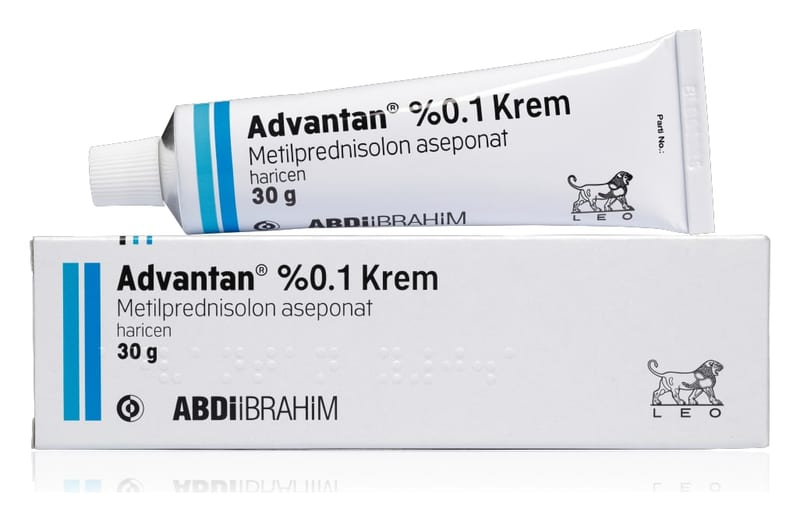

Advantan % 0,1 Krem, 15 g

Ne için kullanılır
KT · Bölüm 1ADVANTAN, 15 g, 30 g ya da 60 g beyaz ila sarımsı renkte krem içeren, ağzı plastik kapakla kapatılmış, alüminyum tüplerde ve karton kutu içerisinde kullanıma sunulmaktadır.
ADVANTAN, iltihabi ve alerjik deri tepkilerini baskılar ve kızarıklık, deri kalınlaşması, deri yüzeyinde tabaka oluşumu, ödem, kaşıntı ve diğer şikayetler (yanma hissi veya ağrı) gibi deri sorunlarından kaynaklanan belirtileri hafifletir.
ADVANTAN mayasıl (ekzema) tedavisi için deriye hafifçe sürülmek suretiyle kullanılır.
ADVANTAN Krem ani gelişen ekzema, sinirsel nedenlere bağlı deride kabartılı ve kızarıklıklarla seyreden kaşıntılı kronik deri iltihabı, temas ekzeması, bozulmaya yol açan ekzema (dejeneratif ekzema), sulu ekzema, kaşıntılı deride madeni para şeklinde döküntülerle seyreden ekzema, çocuklarda görülen ekzema ve herhangi başka bir şekilde sınıflandırılmamış olan ekzemada kullanılır.
Bu ilacı kullanmaya başlamadan önce bu KULLANMA TALİMATINI dikkatlice okuyunuz, çünkü sizin için önemli bilgiler içermektedir. • Bu kullanma talimatını saklayınız. Daha sonra tekrar okumaya ihtiyaç duyabilirsiniz. • Eğer ilave sorularınız olursa, lütfen doktorunuza veya eczacınıza danışınız. • Bu ilaç kişisel olarak size reçete edilmiştir, başkalarına vermeyiniz. • Bu ilacın kullanımı sırasında, doktora veya hastaneye gittiğinizde doktorunuza bu ilacı kullandığınızı söyleyiniz. • Bu talimatta yazılanlara aynen uyunuz. İlaç hakkında size önerilen dozun dışında yüksek veya düşük doz kullanmayınız.
ADVANTAN yüksek su ve düşük yağ içeriğine sahiptir ve özellikle akut ve akıntılı ekzema için, çok yağlı deri ve vücudun açık ya da tüylü kısımları için uygundur.